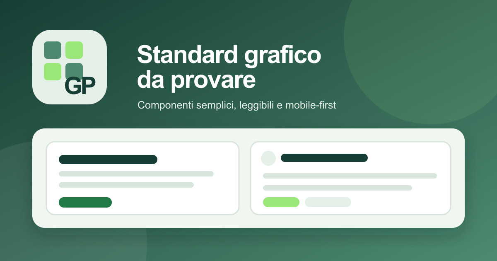

01 · HOME
I cinque argomenti
La Home mostra soltanto questi raggruppamenti. Ogni argomento mantiene icona e colore in tutte le anteprime; il conteggio si aggiorna dal catalogo delle pagine.

Cucina
Ricette, ingredienti e preparazioni.
1 pagina · esempio: Copette al mascarpone
Medicina
Salute, prevenzione e confronti informativi.
3 pagine · esempio: Forfora
Legale
Documenti e riferimenti giuridici o fiscali.
3 pagine · comprende Mio Savi commercialista
Lavoro
Attività e documenti operativi professionali.
Nessuna pagina assegnata al momento
Varie
Contenuti trasversali e strumenti.
2 pagine · comprende Token agenti02 · BASE
Principi visivi
La lettura da cellulare viene prima: una sola colonna, azioni grandi, testo non compresso e informazioni importanti subito visibili. Il verde è il colore dell’identità e dell’azione; i colori aggiuntivi sono riservati agli stati.
#173E35titoli, header, testo forte#4D8A70accenti, superfici selezionate#217A46azioni, focus, successo#E5F0E8fondi leggeri, tag#F1F6F1sfondo complessivo#D8E5DCdivisioni discreteTIPOGRAFIA · INTER, SYSTEM UI
Titolo chiaro, senza effetti inutili.
È applicata la scelta tipografica 2: testo più leggibile, interlinea ampia e gerarchie nette. Su mobile i contenuti restano comodi senza richiedere zoom.
03 · NAVIGAZIONE
Menu pubblico e menu applicazione
Nell’app compare invece un unico menu a due livelli. All’apertura è tutto chiuso; selezionando un argomento si chiudono gli altri e appaiono le pagine contenute.
Cucina1
Medicina3
Legale3
Lavoro0
Varie2
04 · AZIONI
Pulsanti e controlli
Forma proposta: rettangoli morbidi con raggio 12 px; niente pulsanti tondi, salvo le icone singole. Stampa PDF usa icona e testo rossi; Condividi usa sempre la stessa icona e il testo azzurro-blu, anche nelle card della Home.
Gerarchia dei pulsanti
Altezza minima: 44 px. Il rosso compare soltanto per azioni distruttive e sempre con un’ulteriore conferma.
05 · CONTENUTO
Schede, dati, immagini e avvisi

Scheda informativa
Per un concetto, una scelta o un dato: titolo, testo breve e un’azione eventuale.
Vedi le fonti
Link esterno
Le risorse esterne sono dichiarate, con dominio leggibile e icona di uscita.
Apri esempio
| Voce | Valore | Stato |
|---|---|---|
| Informazione principale | Valore immediato | Verificato |
| Dato secondario | Da completare | Da verificare |
06 · TRASPARENZA
Fonti e riferimenti
Le fonti stanno alla fine della pagina: non interrompono la lettura, ma restano sempre raggiungibili dall’indice. Su cellulare sono chiuse per non allungare inutilmente la pagina; chi vuole le apre.
Fonti consultate3 riferimenti · verificati il 25 luglio 2026
- 01Nome della fonte o enteexample.com/documentoConsultata il 25 luglio 2026 · documento principale
- 02Fonte di confrontoexample.com/datiConsultata il 24 luglio 2026 · dati integrativi
- 03Nota metodologicaexample.com/metodoConsultata il 22 luglio 2026 · quadro generale